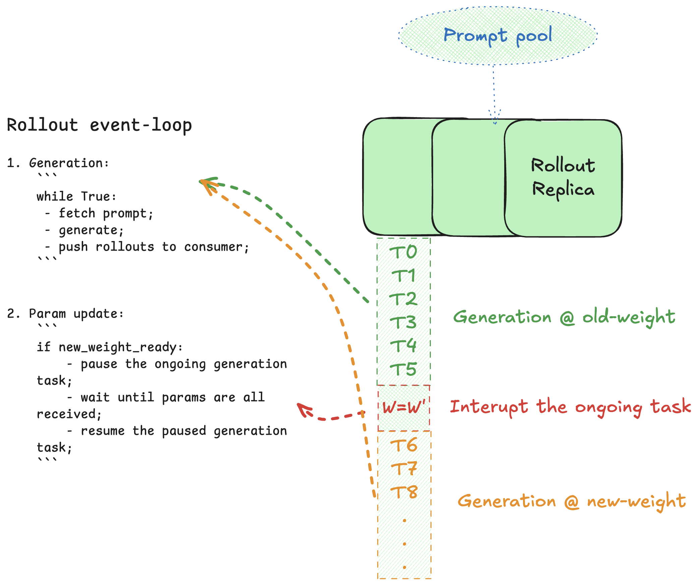
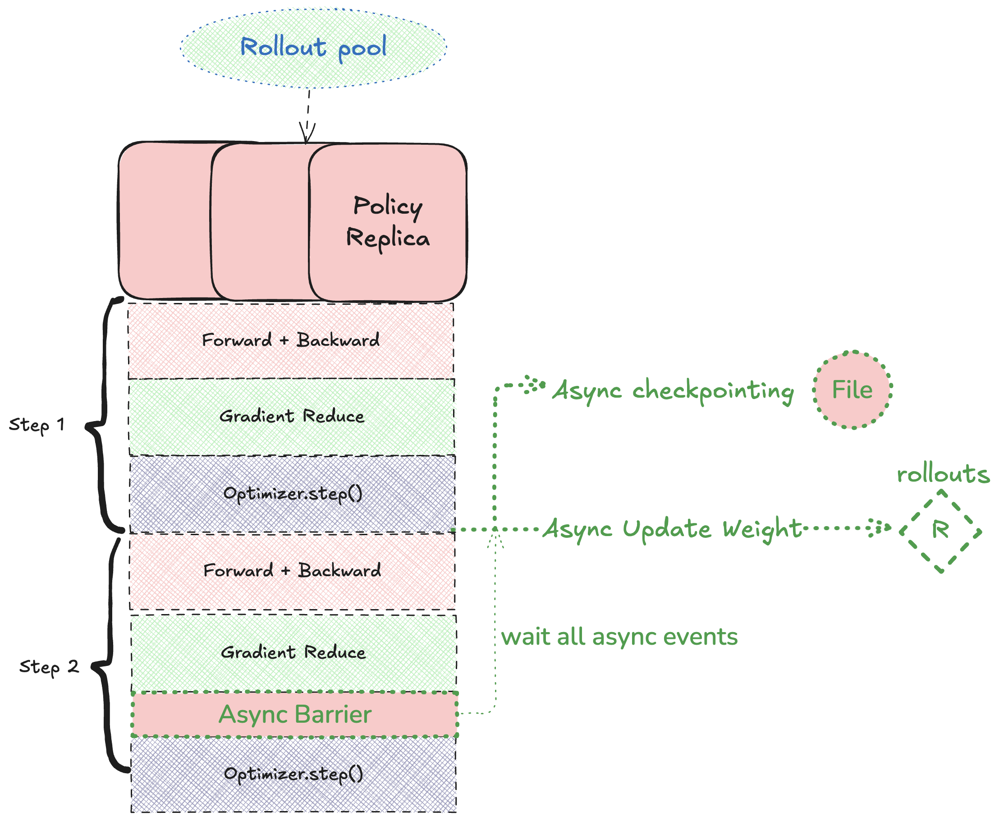
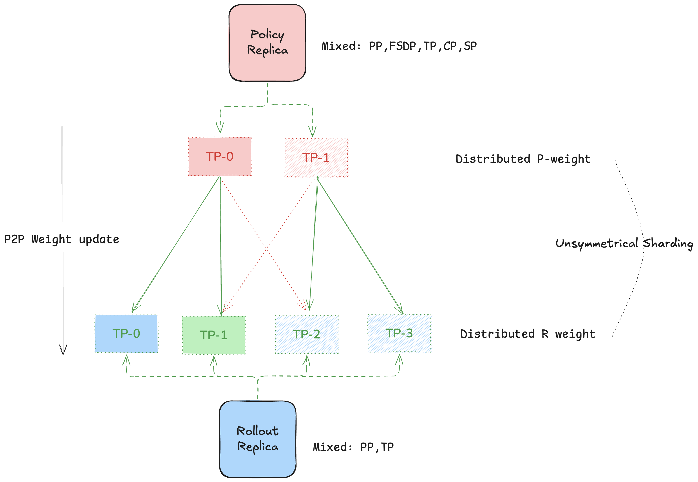

Overview
Cosmos-RL is a flexible and scalable Reinforcement Learning framework specialized for Physical AI applications, built around a single, lightweight controller. By decoupling policy training from environment rollouts, it achieves:
Seamless scalability to thousands of GPUs
Modular, easy-to-extend design
Higher throughput via fully asynchronous execution
Key Features
Single-controller architecture – Coordinates all workers, eliminates heavyweight orchestration layers
Native PyTorch – Leverages familiar APIs and tooling; no custom C++/CUDA kernels required
Asynchronous, parallel policy and rollout – Maximizes hardware utilization; rollouts never sleep while the policy trains
Fine-grained scaling – Independently scale policy (training) and rollout (data generation) workers
Architecture
Disaggregated Policy & Rollout Workers
In Cosmos-RL, policy trainers and rollout actors run as separate worker pools, each of which can live on different hardware:
Flexibility – Spin up rollout workers on cost-effective GPUs (e.g. L40s) – Reserve high-end accelerators (e.g. H100s) for policy training
Scalability – Scale the data-generation layer independently when rollouts become the bottleneck
Performance – True parallelism: no idle time offloading model checkpoints between tasks
Unblocking Weight Synchronization
Policy workers periodically push updated model weights to rollout actors. This happens every
config.train.sync_weight_interval iterations:
Rollout side

Rollout tasks are token-granular. Upon receiving a sync request, a worker will pause its current rollout at the next token boundary, apply the new weights, and resume immediately.
Policy side

Weight pushes are handled asynchronously so that training loops never stall.
High-Performance Weight Transfer
Transferring large models across machines presents unique challenges:
Network topologies vary (InfiniBand, Ethernet, NVLink).
Source and target may use different parallelisms (tensor-, pipeline-, or FSDP).
Cosmos-RL overcomes these via:
RDMA-accelerated transfers over InfiniBand and NVLink
A topology-aware weight-mapping algorithm that avoids global all-gather
Minimal peak memory footprint during synchronization

Putting It All Together
By combining asynchronous execution, fine-grained rollout interruption, and optimized weight transfers, Cosmos-RL delivers a highly efficient, scalable RL training stack that:
Keeps GPUs busy generating and consuming experience
Scales linearly as you add more workers
Requires zero custom kernels or external orchestration frameworks